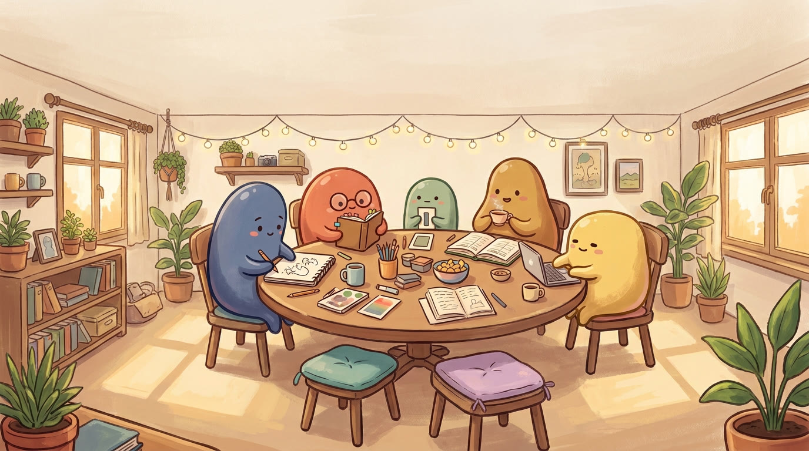

Built earlier by this same team
Demo bakery for a hackathon: no real bread, nothing to pay.
Why
Who it’s for
Then any craft, any seat.
Our team, bakery run
A default coding agent, same bakery prompt
Next
